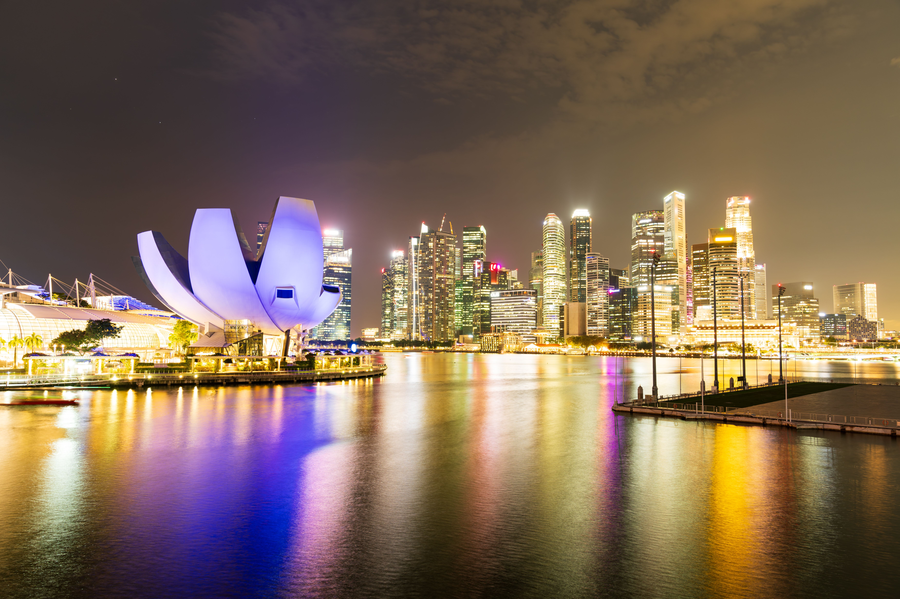

Day 1
Arrive, check in and enjoy a relaxed waterfront evening.
Plan a Singapore holiday with city sightseeing, waterfront attractions, gardens, family experiences and customized itineraries from Unique Vacations India.

Singapore is a convenient choice for travellers who enjoy city attractions, gardens, waterfront views, shopping and family activities. Plan your days around the attractions you want to visit and the pace that works for your group.
Tell us your preferred dates, number of travellers, departure city and budget range. We can help you compare suitable itinerary and accommodation options before you confirm your booking.
Request a customized quote →Use these ideas to build a trip that fits your interests and available time.
This is an illustrative outline, not a confirmed package. Final routing depends on your dates, availability and preferences.
Arrive, check in and enjoy a relaxed waterfront evening.
Explore major city landmarks and gardens.
Spend the day at selected family attractions or experiences.
Enjoy shopping, neighbourhoods or an optional attraction.
Transfer to the airport according to your departure time.
Important details to check while planning your holiday.
Singapore offers a variety of attractions for different ages; the itinerary can be customized for your family.
Ticket inclusions vary. Ask for a quote that clearly lists each included attraction and transfer.
A multi-destination trip may be possible depending on travel dates, flights and overall duration.
Share your travel dates, traveller count and preferences. We will help you explore suitable options.